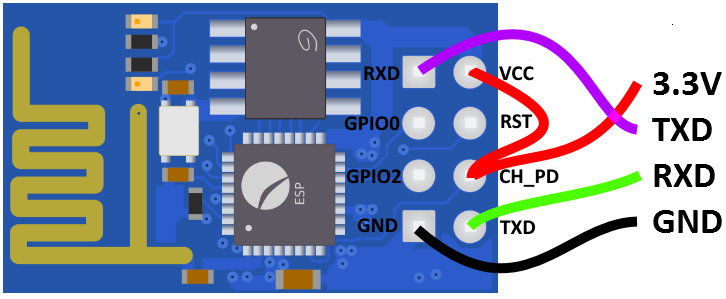
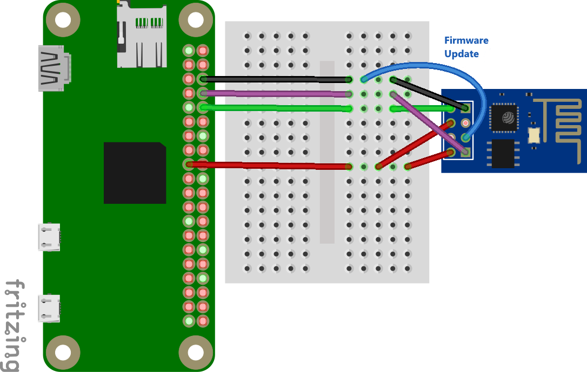

Das kleinste Experimentierboard mit dem ESP8266 Mikrocontroller nennt sich ESP-01 bzw. ESP-01S. Es hat nur die nötigsten Anschlüsse und wird mit einer einfachen Firmware ausgeliefert. Perfekt für erste Experimente mit dem Raspberry Pi.
Beschreibung
Der ESP8266 ist ein kostengünstiger 32-Bit-Mikrocontroller der chinesischen Firma Espressif und ermöglicht durch sein integriertes WLAN viele einfache IoT Anwendungen.
Der Mikrocontroller hat mehere GPIOs die unter anderem SPI, I2C, UART, ADC, RTC und mehr unterstützen. Die Betriebsspannung beträgt 3,3 V, weshalb er sich auch gut mit dem Raspberry Pi kombinieren lässt.
Es gibt in auf unterschiedlichen Experimentierboards zu kaufen. Die kleinste und günstigste Platine ist der ESP-01. Auf den 8 Kontakten ist ein UART (RX, TX, GND) und 2 GPIO Pins vorhanden.
Über den UART kann mit der enthaltenen Firmware verschiedene Netzwerkunktionen über WLAN genutzt werden. Unter der Rubrik Verlinkungen ist eine Befehlsliste bei der alle Funktionen aufgelistet und beschrieben sind.

Inzwischen gibt es eine aktualisierte Version mit der Bezeichnung ESP-01S. Diese hat gegenüber dem alten Modul folgende Unterschiede:
- Keine rote LED für die Versorgungsanzeige (weniger Verbrauch)
- Die blaue LED ist bei GPIO2 (Active Low) angeschlossen anstatt bei TX
- Die Eingänge EN, RST und GPI0 sind bereits über einen Pull-up Widerstand (12 kOhm) auf 3,3 V gesetzt (RST auch bei schwarzer ESP01 Platine)
- 1 MBit Flash Speicher, die blaue ESP01 Platine hatt nur 512 kBit, die schwarze ESP01 Platine hatte allerdings ebenfalls 1 MBit Speicher
- Pins sind auf der Platine beschriftet
- Eine neuere Firmware ist vorinstalliert
- Wegen der neuen Firmware, ist der schnellere QIO SPI-Modus mit 80 % höherer Übertragungsgeschwindigkeit aktiv
Insgesamt bietet die ESP-01S Platine einige Vorteile, weshalb man sie bevorzugt erweben sollte. Vorallem sind die Anschlusse EN, RST und GPI0 bereits für den korrekten Betrieb vorkonfiguiert, sodass man nur die Versorgung (3,3 V und GND) und eventuell den UART anschließen muss. Von der alten blauen ESP01 Platine ist wegen des geringen Speichers generell abzuraten.
Anschluss
Die ESP-01 Platine kann über den UART Anschluss mit dem Raspberry Pi verbunden werden. Die Versorgung erfolgt über den 3.3 V und GND Anschluss.

Um ein Firmware Update ausführen zu können, muss der GPIO0 Eingang auf GND gesetzt werden. Die kann man z. B. mit einem zusätzlichen Kabel erledigen.
Kommunikation
Um mit dem Raspberry Pi über den UART kommunizieren zu können, muss zunächst der serielle Terminal Dienst beendet werden.
sudo systemctl stop serial-getty@ttyAMA0.service
sudo systemctl status serial-getty@ttyAMA0.service
Danach kann ein serielles Kommunikationsprogramm wie z. B. Minicom installiert und gestartet werden.
sudo apt-get install minicom
sudo minicom -b 115200 -o -D /dev/ttyAMA0
Alternativ kann auch screen zur Kommunikation benutzt werden.
sudo screen /dev/ttyAMA0 115200
Bei beiden Programmen müssen alle Eingaben mit den Tasten Enter (CR-Zeichen) und Strg+J (LF-Zeichen) abgeschlossen werden.
Als erstes kann man die Verbindung mit dem Befehl “AT” überprüfen (danach Enter und Strg+J nicht vergessen). Als Antwort muss “OK” zurückgeschickt werden.
Sendet man den Reset Befehl “AT+RST” so wird ein Reset durchgeführt und Informationen über den Mikrocontroller ausgegeben.
ets Jan 8 2013,rst cause:2, boot mode:(3,6)
load 0x40100000, len 1396, room 16
tail 4
chksum 0x89
load 0x3ffe8000, len 776, room 4
tail 4
chksum 0xe8
load 0x3ffe8308, len 540, room 4
tail 8
chksum 0xc0
csum 0xc0
2nd boot version : 1.4(b1)
SPI Speed : 40MHz
SPI Mode : DIO
SPI Flash Size & Map: 8Mbit(512KB+512KB)
jump to run user1 @ 1000
Ai-Thinker Technology Co.,Ltd.
ready
Der Befehl “AT+GMR” liest die Firmwareversion aus.
AT version:0.40.0.0(Aug 8 2015 14:45:58)
SDK version:1.3.0
Ai-Thinker Technology Co.,Ltd.
Build:1.3.0.2 Sep 11 2015 11:48:04
OK
Der Befehl “AT+CWLAP” listet die gefundenen WLAN-Netze mit Zustazinformationen auf.
+CWLAP:(3,"NETGEAR23",-86,"a0:63:91:ca:98:ca",6,-14)
+CWLAP:(4,"A1-XZY",-78,"a4:b1:e9:43:f4:d3",11,-41)
+CWLAP:(4,"Home",-92,"f4:06:8d:3b:e1:3c",11,-41)
+CWLAP:(3,"AndroidAP",-89,"10:a5:d0:73:de:eb",11,23)
Minicom beenden man indem man die Tasten Strg+A und dann X drückt. Zum Beenden von screen drückt man zuerst Strg+A und gibt dann “:quit” gefolgt von der Enter-Taste ein.
Verlinkungen
Datenblatt Englisch ESP8266EX
Firmware und Tools sind im NONOS SDK auf Github verfügbar.
Der AT-Befehlssatz kann heruntergeladen werden.
Datenblatt Englisch ESP-01/07/12 Version 1.1
Datenblatt Englisch ESP-01S
Datenblatt Chinesisch ESP-01S